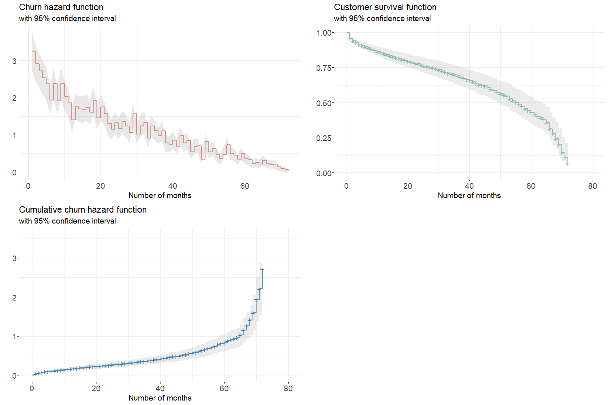

5.3 Churn analysis
Estimating the risk of attrition related to each customer is an essential step to model the firm’s portfolio. In this context, survival models can be implemented with a view of deriving a predicted churn risk and survival function for each client. One the one hand, these predictions can be used to identify loyal consumers and make appropriate decisions. For instance, it might be relevant to offer benefits to a high-value client with a high estimated churn risk. On the other hand, a customer’s survival probability at time \(t\) represents the chance that this very customer be active in the portfolio at time \(t\). This measure is helpful to compute the estimated value of the portfolio in the last section.
Before presenting the estimation results, it seems important to recall that Tenure_Months and Churn_Value can be seen as a pair of time and event variables used as target in survival models.
| CustomerID | Tenure_Months | Churn_Value |
|---|---|---|
| 3862 | 1 | 0 |
| 300 | 13 | 1 |
| 1671 | 30 | 1 |
| 6705 | 43 | 0 |
| 3702 | 12 | 0 |
5.3.1 The Cox model
When it comes to choose an estimation method on survival data, the Cox PH model appears to be an interesting first choice. As explained in chapter 3, this semi-parametric model makes no assumption regarding the nature of the baseline hazard function \(\lambda_0(t)\). The parametric part only relies in the modelling of the effect of some covariates on the hazard function \(\lambda(t)\) (see section 3.6.2 for more details).
Fitting the model on the selected features
Using the coxph function from the survival R library (Terry M. Therneau and Patricia M. Grambsch 2000), we are able to train a Cox model on the feature vector identified in section 5.1. Once the model fitted, it seems relevant to evaluate its performance on the train data set. Table 5.7 compares the model’s log-likelihood to the constrained model’s. Given the very low p-value, it can be assumed that the Cox model better fits the data than a model with only the intercept.
| Model | Constrained | pvalue | |
|---|---|---|---|
| -9228.77 | -10448.08 | 0 |
Concordance index \(c\) is another metric to assess the performance of models which produces risk scores and is defined as the probability to well predict the order of event occurring time for any pair of instances. For the Cox model, the C-index obtained on the training set is \(c \approx 0.865 \pm 0.004\), which is more than satisfying.
Marginal effects
In the Cox model, the relative hazard between two observations is assumed to be constant over time. As a consequence, the relative hazard becomes \(\exp \hat{\beta}\) for both dummy and continuous variables. For instance regarding figure 5.7, the relative hazard ratio between customers with a two-year contract and those with a month-to-month contract is 0.046, meaning that the latter group is 22 times more prone to churn than the former. Also, month-to-month clients are about 5 times more likely to churn than customers enrolled in one-year plan. When analysing the relative hazard ratios related to the payment method, it comes that clients who pay by electronic or mailed check are two times riskier to churn than those who pay by bank transfer. Furthermore, being enrolled in a plan with additional services like Online_Security, Online_Backup or Tech_Support tends to decrease the estimated churn risk. As for the effect of the Internet_Service covariate on the risk of attrition, it seems to be mitigated since clients who have a fiber optic internet connection are more than twice as likely to churn as those using a DSL internet connection.
Figure 5.7: Marginal effects obtained with the Cox PH model
Estimating churn hazard
Figure 5.8: Aggregated churn hazard, survival and cumulative hazard functions estimated by Cox model
Figure 5.9: Aggregated churn hazard, survival and cumulative hazard functions for each cluster
5.3.2 Other models
| Train | Test | |
|---|---|---|
| Cox | 86.769 | 86.253 |
| RSF | 49.273 | 49.229 |